InverseTrendTransform¶
-
class
InverseTrendTransform(*args)¶ Inverse Trend transformation.
Parameters: - myInverseTrendFunc
Function The inverse trend function 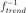.
Notes
A multivariate stochastic process
 of dimension d where
of dimension d where  may write as the sum of a trend function 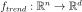 and a stationary multivariate stochastic process 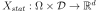 of dimension d as follows:
may write as the sum of a trend function 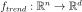 and a stationary multivariate stochastic process 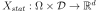 of dimension d as follows:
We note
 the values of one field of the process X, associated to the mesh
the values of one field of the process X, associated to the mesh  of
of  . We note 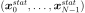 the values of the resulting stationary field. Then we have:
. We note 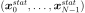 the values of the resulting stationary field. Then we have:
The inverse trend transformation enables to get the 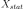 process or to get the field.
Examples
Create a trend function:
 where 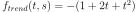:
where 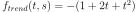:>>> import openturns as ot >>> h = ot.SymbolicFunction(['t'], ['-(1+2*t+t^2)']) >>> mesh = ot.RegularGrid(0.0, 0.1, 11) >>> fTrendInv = ot.InverseTrendTransform(h, mesh)
Attributes: thisownThe membership flag
Methods
__call__(*args)Call self as a function. getCallsNumber()Get the number of calls of the function. getClassName()Accessor to the object’s name. getFunction()Get the function of  .
.getId()Accessor to the object’s id. getInputDescription()Get the description of the input field values. getInputDimension()Get the dimension of the input field values. getInputMesh()Get the mesh associated to the input domain. getInverse()Accessor to the trend function. getMarginal(*args)Get the marginal(s) at given indice(s). getName()Accessor to the object’s name. getOutputDescription()Get the description of the output field values. getOutputDimension()Get the dimension of the output field values. getOutputMesh()Get the mesh associated to the output domain. getShadowedId()Accessor to the object’s shadowed id. getVisibility()Accessor to the object’s visibility state. hasName()Test if the object is named. hasVisibleName()Test if the object has a distinguishable name. isActingPointwise()Whether the function acts point-wise. setInputDescription(inputDescription)Set the description of the input field values. setInputMesh(inputMesh)Set the mesh associated to the input domain. setName(name)Accessor to the object’s name. setOutputDescription(outputDescription)Set the description of the output field values. setOutputMesh(outputMesh)Set the mesh associated to the output domain. setShadowedId(id)Accessor to the object’s shadowed id. setVisibility(visible)Accessor to the object’s visibility state. getTrendFunction -
__init__(*args)¶ Initialize self. See help(type(self)) for accurate signature.
-
getCallsNumber()¶ Get the number of calls of the function.
Returns: - callsNumberint
Counts the number of times the function has been called since its creation.
-
getClassName()¶ Accessor to the object’s name.
Returns: - class_namestr
The object class name (object.__class__.__name__).
-
getFunction()¶ Get the function of
.Returns: - l
Function Function
 .
.
Examples
>>> import openturns as ot >>> h = ot.SymbolicFunction(['t', 'x'], ['x + t^2']) >>> n = 1 >>> mesh = ot.Mesh(n) >>> myVertexValueFunction = ot.ValueFunction(h, mesh) >>> print(myVertexValueFunction.getFunction()) [t,x]->[x + t^2]
- l
-
getId()¶ Accessor to the object’s id.
Returns: - idint
Internal unique identifier.
-
getInputDescription()¶ Get the description of the input field values.
Returns: - inputDescription
Description Description of the input field values.
- inputDescription
-
getInputDimension()¶ Get the dimension of the input field values.
Returns: - dint
Dimension
 of the input field values.
of the input field values.
-
getInverse()¶ Accessor to the trend function.
Returns: - myTrendTransform
TrendTransform The 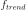 function.
- myTrendTransform
-
getMarginal(*args)¶ Get the marginal(s) at given indice(s).
Parameters: - iint or list of ints,

Indice(s) of the marginal(s) to be extracted.
Returns: - function
VertexValueFunction The initial function restricted to the concerned marginal(s) at the indice(s)
 .
.
- iint or list of ints,
-
getName()¶ Accessor to the object’s name.
Returns: - namestr
The name of the object.
-
getOutputDescription()¶ Get the description of the output field values.
Returns: - outputDescription
Description Description of the output field values.
- outputDescription
-
getOutputDimension()¶ Get the dimension of the output field values.
Returns: - d’int
Dimension
 of the output field values.
of the output field values.
-
getOutputMesh()¶ Get the mesh associated to the output domain.
Returns: - outputMesh
Mesh The output mesh
 .
.
- outputMesh
-
getShadowedId()¶ Accessor to the object’s shadowed id.
Returns: - idint
Internal unique identifier.
-
getVisibility()¶ Accessor to the object’s visibility state.
Returns: - visiblebool
Visibility flag.
-
hasName()¶ Test if the object is named.
Returns: - hasNamebool
True if the name is not empty.
-
hasVisibleName()¶ Test if the object has a distinguishable name.
Returns: - hasVisibleNamebool
True if the name is not empty and not the default one.
-
isActingPointwise()¶ Whether the function acts point-wise.
Returns: - pointWisebool
Returns true if the function evaluation at each vertex depends only on the vertex or the value at the vertex.
-
setInputDescription(inputDescription)¶ Set the description of the input field values.
Parameters: - inputDescriptionsequence of str
Description of the input field values.
-
setInputMesh(inputMesh)¶ Set the mesh associated to the input domain.
Parameters: - inputMesh
Mesh The input mesh
.
- inputMesh
-
setName(name)¶ Accessor to the object’s name.
Parameters: - namestr
The name of the object.
-
setOutputDescription(outputDescription)¶ Set the description of the output field values.
Parameters: - outputDescriptionsequence of str
Describes the outputs of the output field values.
-
setOutputMesh(outputMesh)¶ Set the mesh associated to the output domain.
Parameters: - outputMesh
Mesh The output mesh
.
- outputMesh
-
setShadowedId(id)¶ Accessor to the object’s shadowed id.
Parameters: - idint
Internal unique identifier.
-
setVisibility(visible)¶ Accessor to the object’s visibility state.
Parameters: - visiblebool
Visibility flag.
-
thisown¶ The membership flag
- myInverseTrendFunc